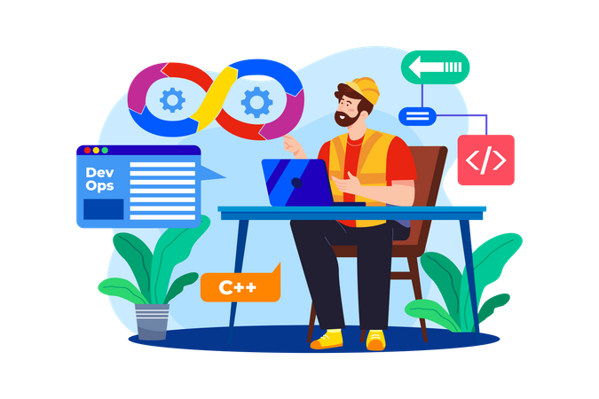
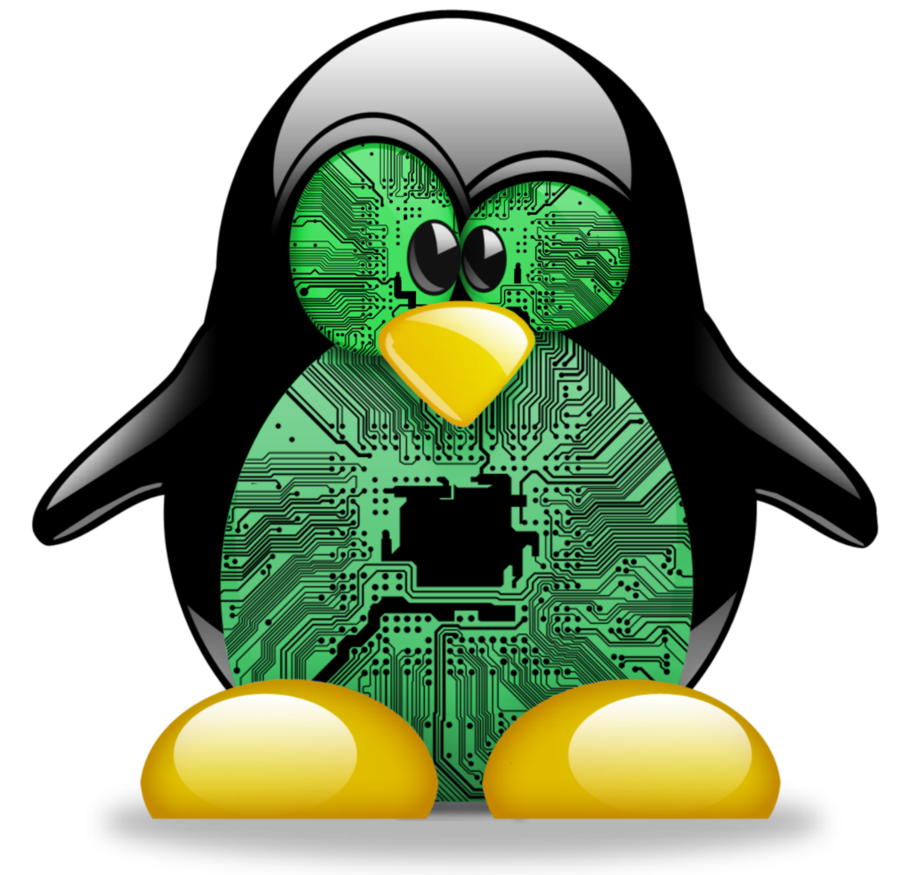

Hi, My name is Shyamsundar
and I am a

Work Experience
I have total 8 years of experience

Site Reliability Engineer at Entrata India Pvt Ltd (Jan 2022 to till
date)
1. Monitoring and maintaining entire infrastructure using Grafana, New Relic,
2. Resolving Dev issues, script related issues, Queue related issues.
3. Release support
4. Taking care for RMQ issue.
5. Resolving AWS cloud issues
6. Performed DB migrations.
Senior System Engineer at Dist and Session Court Pune (Aug 2020
- Dec 2021)
1. Server maintenance activities
2. Patching, regular backup, reboot activities, user management etc.
3. Backup and restore using tools such as Rsync, Scp, Zip and Tar.
4. Package installation using YUM and RPM
5. Taking care of infra and storages
6. Writing scripts for repeatative tasks.
Technical Process Specalist at Infosys BPM Ltd (Oct 2018
- Apr 2020)
1. Execution of night activity for Server reboot, failover activities with Austrelian
client
2. User Management, regular back backup etc.
3. User management in AWS
4. Providing Dev support.
5. Resolving AWS cloud issues
6. Resolving linux issues
NOC Engineer at Tata Communications Transformation Services (June 2015
- July 2018)
1. Creating and Routing Bandwidths of Different Capacities VC-12, VC-3, VC-4, DR trails &
EOS
2. Monitoring of Access and NLD fibre optical network built-up of ECI, Tejas Networks for
OSP
3. O&M of transmission equipment’s like ECI XDM and BG Family and Tejas EMS